Last Week’s Work Review#
Our first step should be writing codes for our baseline RL model, and after that we can try to add additional language interpreter on it and see if we can improve the performance by interpreting the guidebook
we now have two things to do
- build baseline RL model for both NetHack and MiniHack environment
- then we try to feed language data into the model.
- decision transformer model seems a future proof model to embed language information
- build a user-friendly and useful annotation tool for annotators.
- can record the gameplay
- can annotate the objects
- can add instructions
You need password to access to the content, go to Slack *#phdsukai to find more.
Part of this article is encrypted with password:
[TOC]
TODO List#
- read NetHack Learning Environment paper
- read Retro DeepMind paper
- read Online Decision Transformer paper
- read Offline RL with Implicit Q-learning paper
-
reproduce NetHack baseline model - reproduce Team KaKao’s NetHack model
NetHack Learning Environment and their baseline model#
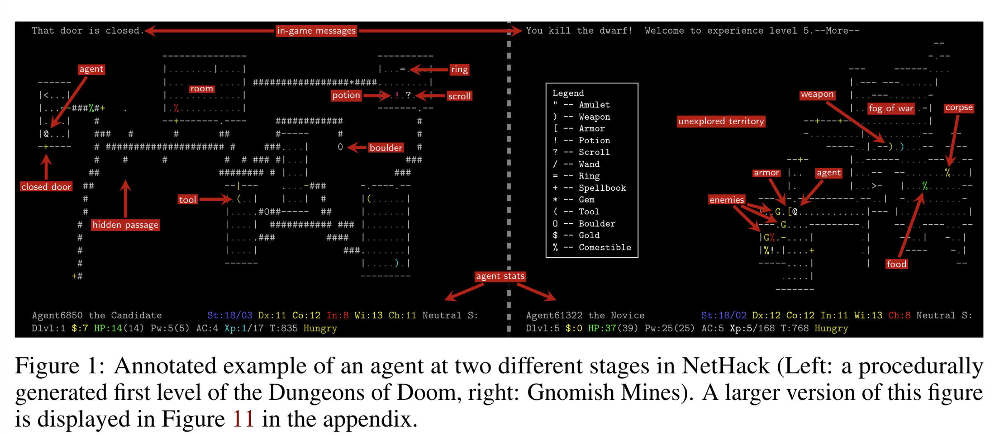
overview of core architecture
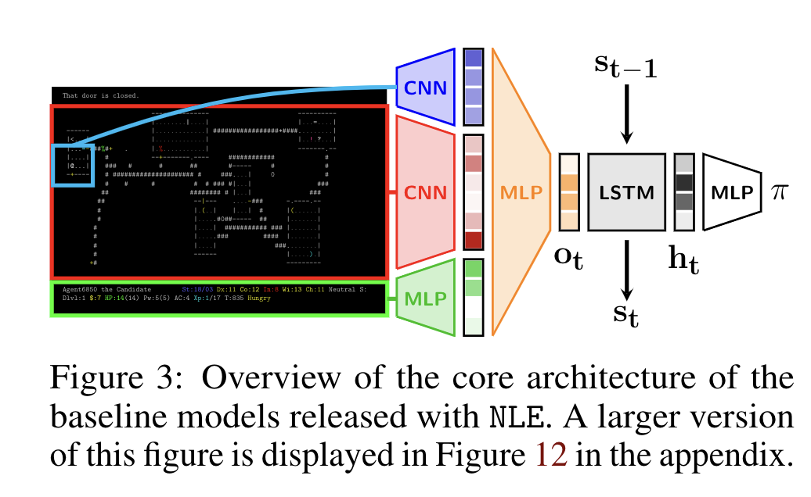
this baseline model encodes the multi-modal observations
they have a red CNN that is applied to all visible glyph embeddings (the glyphs are converted to k-d vector embeddings before applying CNN)
Then another blue CNN is applied to 9 x 9 crop of glyphs around the agent to create a dedicated egocentric representation that leads to heavier focus on local stuffs
- the reason why the author said this is related to generalisation is because
- cropping the image increases the robustness from Rotation, Translation, and Cropping for Zero-Shot Generalization
they also use an green MLP to encode stats (stats can be represented in 21-d dimensional vector)
all embeddings are concatenated together and pass to a second MLP layer so as to lower the dimension.
Finally, we employ a recurrent policyparameterized by an LSTM [33] to obtain the action distribution.
Some observations
- the model does not utilise in-game message, I believe it is because they found out that the in-game message does not really contribute to the performance in their preliminary tests.
- the author claimed that in order to win the game, the algorithm must do intensive exploration, therefore they use IMPALA with Random Network Distillation (RND)
- the model requires 1 Billion training steps.
Lu Wang’s BrowserHack#
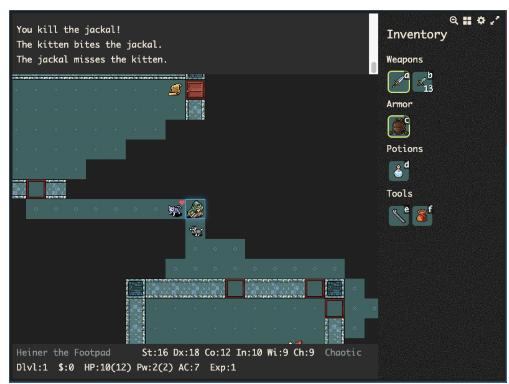
we may use this user friendly graphic interface to get familiar with the game
what is the issue with actor learner architecture (IMPALA)#
although the learner continuously updates its policy, the actors interact with the environment with only old policies. Therefore the new experience trajectories collected by the actors do not really fit to the learner.
- so how can you learn from outdated data
- in IMPLALA, they use a regularisation method called (V-trace), basically they deemphasize the part of the trajectories when old and new policy have different opinions.
what does Random Network Distillation (RND) stimulate curiosity for AI#
this means we start out from a completely randomly initialised, untrained neural network, and over time, slowly distill it into a trained one.
within a RND, we have two networks
- a target network, f, with fixed, randomized weights, wich is never trained, that generates a feature representation for every state
- a prediction network, f hat, that tries to predict the target network’s output.
because the target network’s parameter is frozen, the feature representation for a given state will always be the same.
both network will take the same state as input and if the prediction network cannot produce the same result as target network, then it means that this state is quite new. And the difference between two output are named as intrinsic reward (curiosity reward)
Ok, the above information is enough for you to reproduce the NetHack baseline model, go ahead!
RL algorithm comparison#
https://docs.ray.io/en/master/rllib/rllib-algorithms.html
NLE Challenge 2021#
although there are no papers that use NLE as the research environment
the Facebook team organised NLE challenge 2021
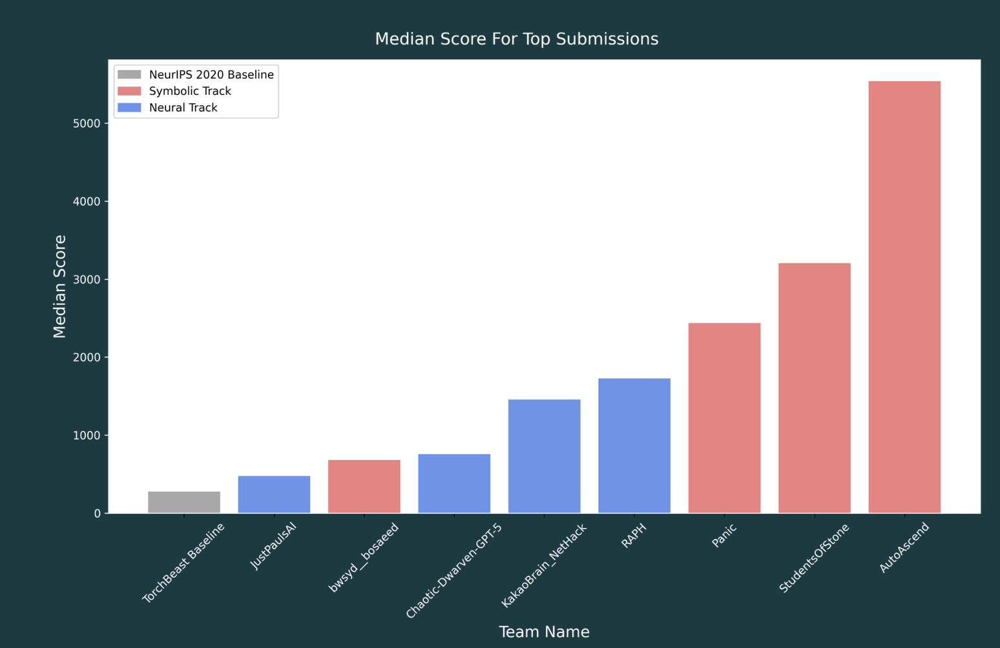
Best Agent Making Significant Use of a Neural Network (Neural):#
- Winners - Team RAPH (surprisingly this model is essentially a rule based model after I check its codes)
- Runners Up - Team Kakao Brain NetHack
8 days ago, Team RAPH open sourced their codes
https://github.com/dmitrySorokin/raph
since the winner neural model is about 5 fold improvement over the baseline model, we should then check the winner model.
Notice that the organisation mentioned that all the agents failed to win the game (0 Ascensions). So they rank the models by the scores they get. The scores can be gained by killing monsters. So most of the agents choose to “camp” in the early stages of the dungeon, grinding out a high score.
Team RAPH NetHack Model (Rule-based model)#
The RAPH NetHack model is actually a symbolic rule based model… I don’t know why the organisation label it as “neural” model…
- it tried to manually classify the branches of the dungeon such as “Mines”, “Sokoban” to “Gehennom”
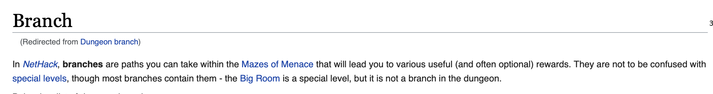
- though this branch information can be found in NetHack wiki
- it also restricts the actions, manually add conditions to actions so as to make sure that the agent can smoothly complete the action
- e.g., for Eat action, the model has manual constraints that the agent can only eat edible items.
- the model also manually classified the items, monsters and others such as “armour class”, “potion class”, “weapon class”, “passive monster”, “walkable tile” etc
- the model has a “Sense” module that read the in-game message and update the status
- e.g., if the in-game message shows “You are carrying to much to get through”, then the agent will label the current tile as “not_walkable”
- in the end the agent’s kernel rank the macro actions and apply “first-fit action selection method”
- the ranking of the macro actions are
- EmergencyHeal
- Eat
- RestoreHP
- EatFromInventory
- FollowGuard
- UseItem
- Enhance
- Attack ….
- the ranking of the macro actions are
- only the Combat Module is trained by deep learning method…
- the Combat module is trained to select hard-coded composite controls to perform sequence of actions such as “approach”, “outflank”, “avoid getting surrounded” etc..
Team KaKao Brain model#
NOTE: we can check the review paper for NetHack challenge 2021 https://arxiv.org/pdf/2203.11889.pdf
their model is based on IMPALA the V-tract actor-critic framework, which they used to optimize a policy network through end-to-end RL training from scratch (yes this is what we want)
they encode in-game messages into BERT embeddings,
encode glyphs into one-hot vector
and blstats into one vector
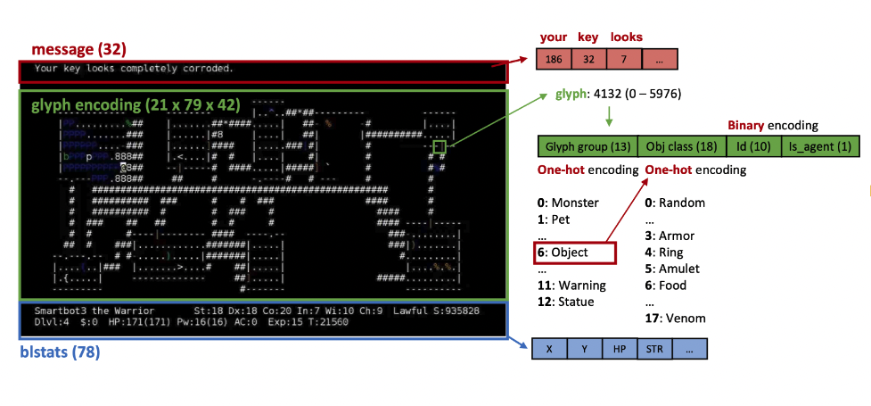
They also encode items in the inventory, spells and interactive items (e.g., pickable items) into one hot vector
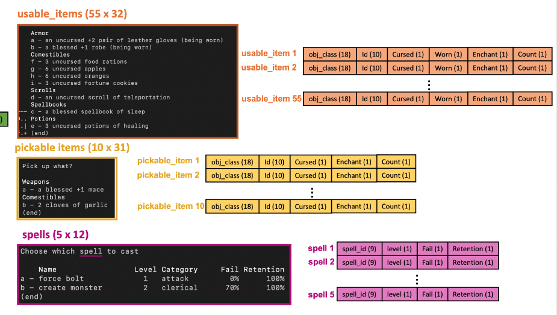
THEN, they also separate action space into
- action-type
- direction
- use-item
- pick-item
- use-spell
in other words, they designed a more structured action space
In the original action space, a single action can be used for different meaning according to the game status. For example, key ‘a’ (action 24) is used for applying tools as well as for selecting an item or a spell. Their separated and somewhat hierarchical action space clarifies the meaning of each action and also reduces the whole space to the valid action space at each time.
The policy is trained for 10 Billion steps on 4 nodes, with 224 CPU cores and 16 V100 GPUs in total.
Architecture of the agent’s policy network
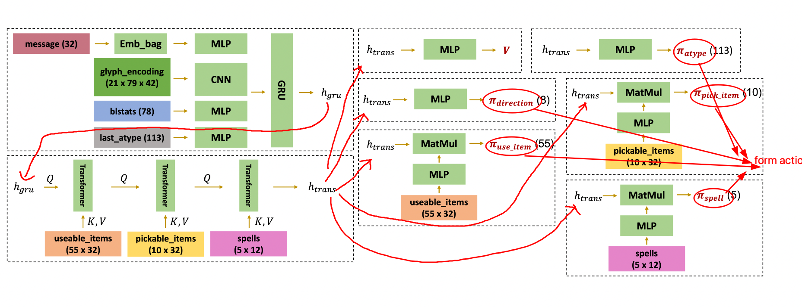
Since they did not publish the code, we need to reproduce this by ourselves.
Our goal#
let neural policy network to utilise NetHack Wiki information
- this is something like we add conditions / constraints to the action
- e.g., in the Wiki, they say that zombies’ corpse is not safe to eat, then when we perform eat action, we don’t eat zombies’ body.
How can we do this …
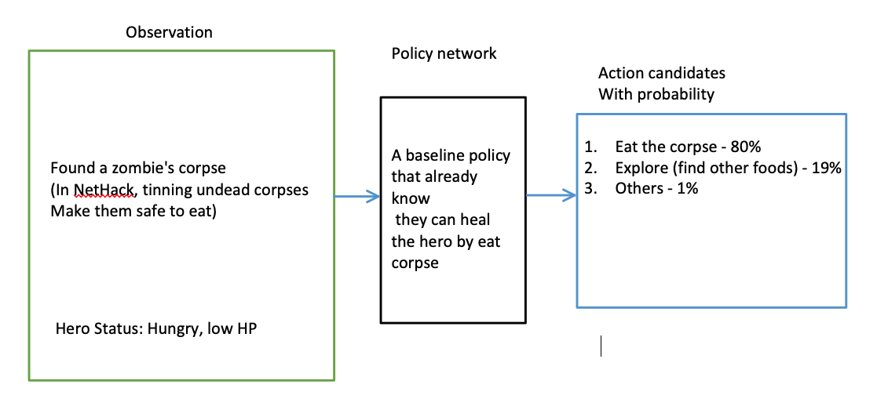
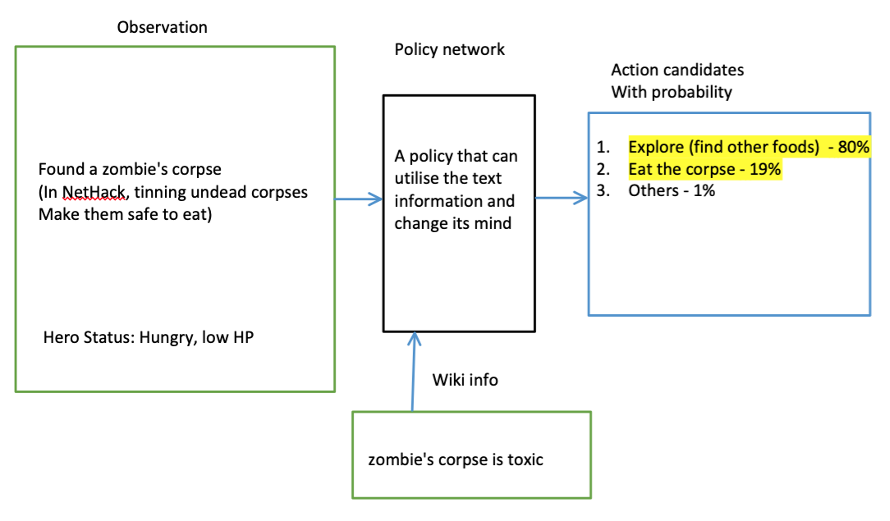
How,
- we add demonstrations that match the sentences in the Wiki and let the agent to do behaviour cloning (not a quick and direct way of lowering the probability of unsuitable action, also it is expensive)
My thoughts
inspired by the Retro model from DeepMind, we may do something like the following
- we pre-define structured action space just like what other teams did (we have to otherwise our action space is too large and the combination of actions can be very very complex for Deep learning agent. )
-
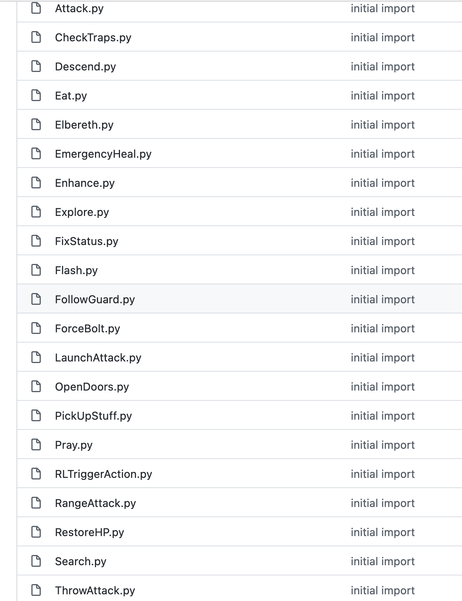
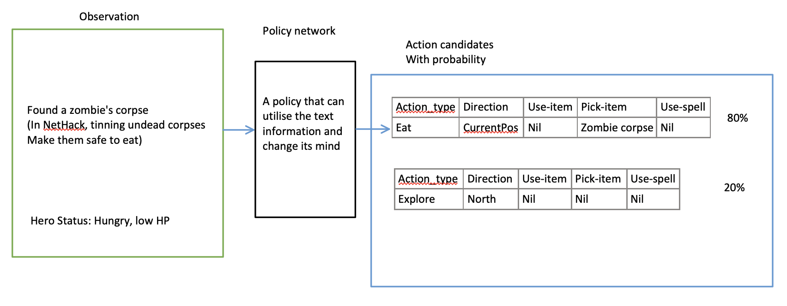
-
- so first we let the RL agent to output the action candidates first without considering to the text info, and then we select top-K actions and we find Wiki contents that are relevant to the top-K actions
- how to find relevant content: the structured hierarchical action can be mapped to canonical utterance. e.g., we may have a structured action like
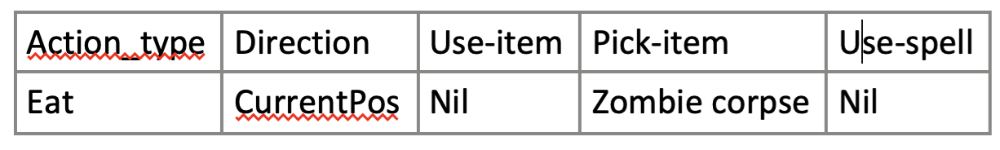
- this action can be translated to “eat zombie corpse at current position”
- now we have the canonical utterance version of the action, we use a off-the-shelf BERT model that can find relevant sentences
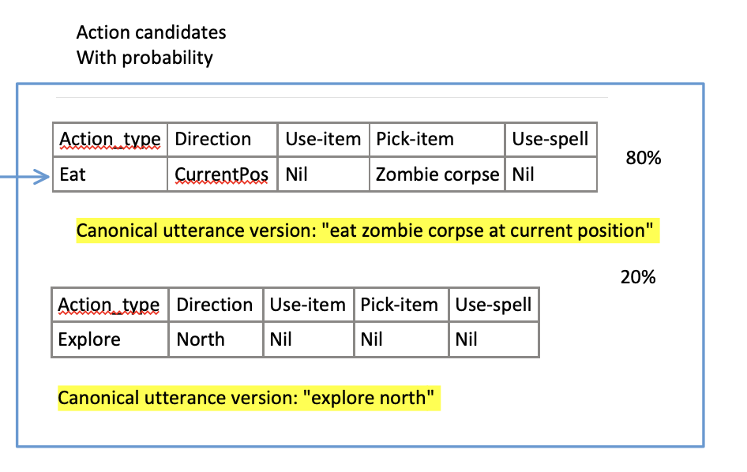
- after we find the relevant content, we do sentiment analysis on it. e.g, “zombie’ corpse is toxic” suggests negative sentiment, and therefore we reduce the ranking of the action candidate “eat zombie corpse at current position”
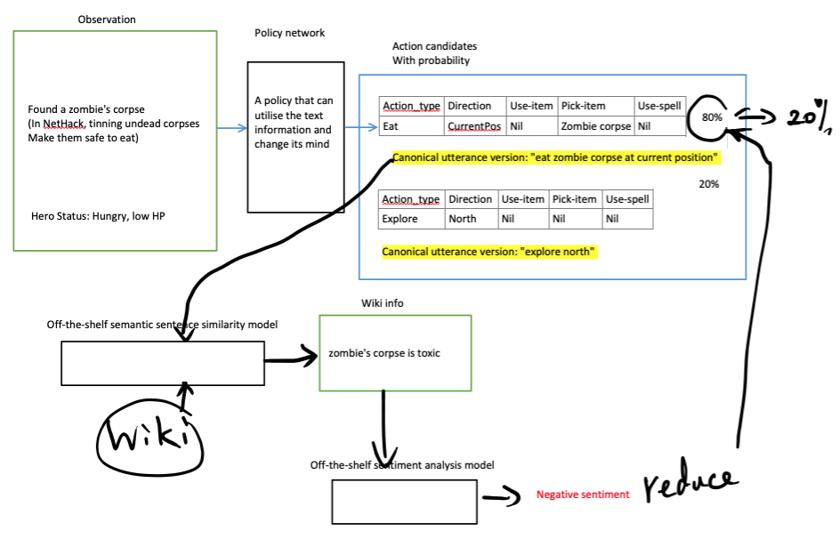
other possible improvements#
- add episodic memory module to enable long-term plan
https://arxiv.org/pdf/2103.06469.pdf
- KaKao’s model use one-hot encoding. Check if we can improve the performance by changing one-hot encoding to continuous embedding, using the method from “Can Wikipedia Help Offline RL” paper.
Paper Reading Notes#
-
Improving language models by retrieving from trillions of tokens
- Author: Sebastian Borgeaud et. al.
- Publish Year: Feb 2022
- Review Date: Mar 2022
-
- Author: Qinqing Zheng
- Publish Year: Feb 2022
- Review Date: Mar 2022
-
Offline Reinforcement Learning with Implicit Q-learning
- Author:Ilya Kostrikov et. al.
- Publish Year: 2021
- Review Date: Mar 2022